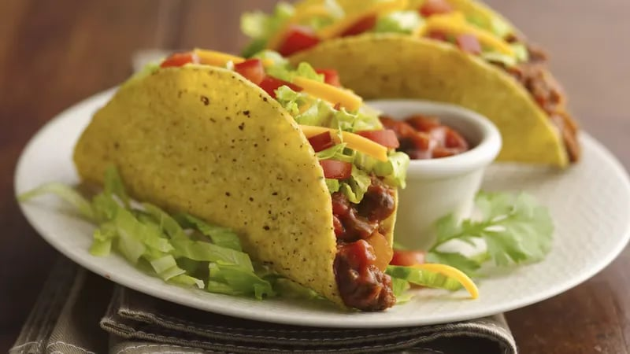

Easy Beef Tacos

Prep
15 Mins
Total
30 Min
Servings
10
Ingredients
- 1 pound lean (at least 80%) ground beef
- 1 cup thick & chunky salsa
- 10 taco shells from 1 box (4.6 oz) Old El Paso™ Crunchy Taco Shells (12 Count)
- 1/2 head lettuce, shredded
- 1 medium tomato, chopped (3/4 cup)
- 1 cup shredded cheddar cheese (4 ounces)
Steps
-
Cook beef in 10-inch skillet over medium heat 8 to 10 minutes, stirring occasionally, until brown; drain.
- Stir salsa into beef. Heat to boiling, stirring constantly; reduce heat to medium-low. Cook 5 minutes,
stirring occasionally. Pour beef mixture into large serving bowl; cover to keep warm.
-
Heat taco shells as directed on package. Serve taco shells with beef mixture, lettuce, tomato and cheese.